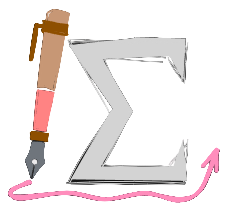

Equation Citator v1.3.5 Documentation
Tutorials
ChangeLogs
API
My Website
Preparing search index...
ui/modals/optionsModal
Module ui/modals/optionsModal
Classes
OptionsModal
PromiseOptionsModal
Type Aliases
ModalOption
Settings
Member Visibility
Protected
Private
Inherited
Theme
OS
Light
Dark
On This Page
Classes
Options
Modal
Promise
Options
Modal
Type Aliases
Modal
Option

Equation Citator
Documentation
Language
English
简体中文
Tutorials
1. Get Started
2. Cross File Citation Feature
ChangeLogs
CHANGELOG 1.1.X
CHANGELOG 1.2.X
CHANGELOG 1.3.X
API Documentation
Module index
Type hierarchy
Generated reference
Module ui/modals/optionsModal
Loading...